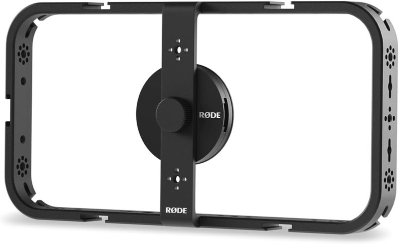

Rode Phone Cage Review: The Ultimate MagSafe Video Rig?
Last updated: August 24, 2026 Research-based guide 7 min read
Buy it if you run more than one accessory at a time. The Rode Phone Cage is genuinely excellent hardware — aluminum, 33 threaded mounting points, two-second MagSafe attach — and it is also more cage than plenty of creators need. If you mount a mic, a light and a battery together, nothing at this price competes on mounting flexibility and this is an easy recommendation. If you clip on a single mic and shoot, you are paying for modularity you will never touch, and a simpler clamp cage will serve you just as well for less. Below is how to tell which of those two you actually are.

Rode Phone Cage
Constructed from high-grade aluminum and featuring 33 threaded mounting points, the Rode Phone Cage turns any MagSafe-compatible smartphone into a modular cinema rig. It is the strongest pick for creators who run two or more accessories at once and want a two-second attach and detach.
- Material
- High-grade aluminum
- Mounting points
- 33 × 1/4"-20
- Weight
- 285 g
In this review
Build Quality & Ergonomics
Unlike plastic alternatives, the Rode Phone Cage's aluminum alloy build is designed to feel solid and resist flex under load. Its rectangular geometry is built for balanced two-handed stabilization during walking shots. Cable management slots built along the frame keep USB-C microphone cables and power bank cords from flopping into the camera frame.
MagSafe Security & Modularity
The central MagSafe disc holds tight during aggressive movements. For added security during action shots, the cage leaves space for physical secondary clamps. With 33 mounting points, you can simultaneously mount a wireless receiver, a compact LED video light, a portable SSD drive, and a top handle without crowding your view screen.
Full Specifications
| Specification | Rode Phone Cage | What it means for you |
|---|---|---|
| Material | High-grade aluminum | Resists flex under the load of a mic, light and handle at once |
| Mounting | 33 × 1/4"-20 threads | Enough spacing that accessories don't compete for the same point |
| Attachment | MagSafe array | Two-second attach and detach; needs a MagSafe phone or case |
| Weight | 285 g | Heavier than plastic clamps — adds inertia that smooths handheld pans |
| Cable management | Integrated routing slots | Keeps USB-C mic and power cables out of the frame |
Pros & Cons
Pros
- 33 mounting threads provide endless customization options
- Ultra-strong MagSafe connection enables fast setup
- Integrated slots for clean cable routing
Cons
- At 285 g, heavier than basic plastic smartphone clamps
- Thick, non-MagSafe phone cases must be removed prior to use
Should You Buy the Rode Phone Cage?
Buy it if you run two or more accessories at once. If your rig carries a light, a mic and a drive together, the Rode Phone Cage is the strongest structural foundation at this price and we'd recommend it without hesitation — the all-metal frame won't flex under that load, and 33 threaded points mean accessories never compete for the same spot.
Don't buy it if you shoot with one clip-on mic and nothing else. You'd be paying for modularity you will never touch, and a simpler clamp cage from our phone cage roundup does that job for less. This is a genuinely excellent cage that is wrong for a meaningful number of the people who land on this page — be honest about which group you're in before you spend.
Check Live Price & Stock on Amazon
Who This Rig Is Actually For
The Rode Phone Cage makes the most sense if you're already invested in a MagSafe workflow and plan to run more than one accessory at a time — a mic and a light together, for example, rather than just one or the other. The 33 threaded points aren't just a spec-sheet number; that layout is specifically designed so you shouldn't have to fight for space when adding a monitor arm or a battery pack alongside your existing setup. If you only ever shoot with a single clip-on mic and nothing else, you're paying for modularity you won't use, and a simpler clamp-style cage (like the options in our iPhone video cage roundup) will save you money without a real downside.
MagSafe vs. Clamp: Which Mount Type Should You Choose?
MagSafe mounting, like the Rode Phone Cage uses, trades a small amount of raw holding force for dramatically faster setup and teardown — you can pull your phone out to check a text and snap it back in place in under two seconds. Clamp-style cages hold slightly more securely under aggressive movement since there's no magnetic limit to overcome, but every attach and detach means realigning the clamp by hand. If you're shooting run-and-gun content where you're constantly grabbing and stowing your phone, MagSafe's speed advantage is worth the small mounting security tradeoff. If your phone stays mounted for the entire shoot and rarely comes off mid-session, a clamp system is the more budget-friendly choice with no real functional downside.
Frequently Asked Questions
Does the Rode Phone Cage work with Android phones?
It's designed around MagSafe, which is an iPhone standard. Android phones don't have the built-in magnet ring, so you'd need a MagSafe-compatible case or adapter ring. For Android, a clamp-style cage is generally the more reliable choice.
How many accessories can you mount on the Rode Phone Cage?
It has 33 threaded mounting points, so running a microphone, an LED light, and a monitor arm at the same time is within its design. In practice most mobile creators use two or three at once.
Is MagSafe secure enough for handheld video?
MagSafe holds well for normal handheld shooting and trades a small amount of raw grip strength for much faster attach and detach. If you're doing aggressive movement or running, a mechanical clamp holds more securely.
What does the Rode Phone Cage weigh?
Approximately 285g. That's heavier than basic plastic smartphone clamps, which is the trade-off for its aluminum construction and mounting density.
Related Guides

5 Best Phone Video Cages for Mobile Filmmaking (2026)

Build an iPhone Cinematic Rig for Under $150

5 Best External SSDs for ProRes 4K Mobile Video
How we research: recommendations on techpicksio.com are built from published manufacturer specifications and documentation. Read our methodology.